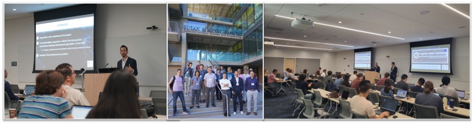

The UCI Neurodatascience Group

The UCI neurodatascience group is an interdisciplinary team of neuroscientists, data scientists, statisticians, and computer scientists who aim to develop advanced methods to measure and decode brain activity. Led by Dr. Norbert Fortin and Dr. Babak Shahbaba, this growing team has produced work spanning a broad range of inquiry across the neuroscience and data science fields.
← Home
Last updated: 26 March, 2026